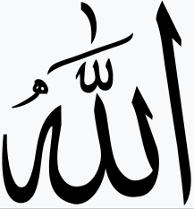
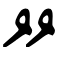
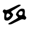
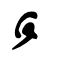
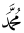
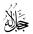

Но, пожалуй, главной сложностью изучения алфавита является различная его интерпретация разными авторами.
1.1. О терминах
Говоря о символах (арабского) алфавита используют термины: 'буква', 'графема' и реже
'глиф'. :
- графема - символ письменности,- это м.б. не только отдельная буква, но и их комбинация
- лигатура или иероглиф. Т.е. отдельный символ текста
- буква - подмножество графем,- собственно символ алфавита, соответствующий одному или
нескольким звукам;
- глиф - изображение графемы, зависящее от шрифта или стиля написания.
Каждая буква (в т.ч. являющаяся частью графемы) состоит из
базового
символа и
окружающих его
диакритических
значков
(точек и черточек), позволяющих
чужеземцам адаптировать этот алфавит к местным
языковым особенностям.
С использованием термина диакритические значки нет чёткой однозначности.
Так, например, хвостик у
кириллической буквы 'щ' не считается диакритическим значком, а вот такой же
хвостик у
турекцкой буквы 'ç' - считается! Другой пример: точка у буквы 'i' в английском и
турецком языках как бы есть часть базового символа, а в арабкой букве 'ذ ' - она уже
"диакритический знак".
Часть диакритических значков, отличная от точек,
считается значками вокализации, обычно называемыми на арабский лад хараками от арабского
слова حركة, переводимого как 'движение'.
Они пишутся (обычно) над- или под- буквами слова.
Часто их все называют огласовками, что не корректно, т.к. собственно
"огласовывающими" являются лишь 4.5 из харакат.
Использование харакат (в дополнение к диакритическим точкам) позволило строго
регламентировать звучание арабских слов, обеспечивая
правильность
произнесения
текстов Корана,- как 'аутентичными' арабами, так и всеми мусульманами.
Использование харакат придаёт большую гибкость арабскому письму,
отображая прямо в тексте правила, определяющие все нюансы артикуляции при произношении слов.
А, при их отсутствии,
упрощенные символы алфавита и пренебрежительное отношение к гласным позволяют легко освоить и написание
букв, и понимание слов.
Отметим уже тут: сами хараки - суть уменшенные (и искаженные) изображения букв алфавита. А
уменшены они потому, что несут второстепенные характеристики.
1.2. О мудрёных терминах
Не следует пугаться страннозвучащих терминов, например, таких, как 'касра', 'хамза' - они суть арабские
названия физиологических свойств произношения букв. Следует просто выучить их переводы на русский.
Часто эти термины употребляют начинающимися слогом 'ма-' (по-арабски مَ),- это просто означает предлог 'с'.
И, поэтому, например, слово максура означает всего лишь "с касрой".
И уж тем более не следует пугаться псевдоумных фраз как, например, "буква, содержащая
фатху ( ـَ ), называется мафтух ( مَفْتُوح )"! Ведь тут написано 'масло-маслянное', т.к.
'мафтух' переводися именно как 'с фатхой'.
Прежде чем анализировать символы алфавита необходимо уточнить несколько моментов.
-
Считается, что все буквы - согласные. Во всяком случае, если вбить в поисковик Гугла фразу "Арабский
алфавит гласные буквы", то первой строкой получим ответ: "Гласных букв в арабском алфавите нет".
Впрочем, на той же странице (выдачи результатов поиска) узнаём, что хоть одна гласная да имеется,-
алиф!
А еще есть две т.с. полугласные,- йа и вау,- аналогичные таким двойственным звукам в
русском или английском. Вместе с алифом они являют троицу, называемую
слабыми
буквами, которые могут обозначать как согласный, так и гласный звук.
И именно гласные звуки они обозначают, используясь в виде диакритических значков.
-
В дополнение к трём названым буквам слова содержат (а как же иначе-то?) еще гласные звуки, на письме
обычно не
показываемые. Потому, что во-первых: "и так все знают" как звучит данное слово в данном контексте,
а во-вторых часто их звучание - несущественно, т.к. оно ничего не означает. В тех же
случаях, вау когда "не все знают" (например в детских книжках), или когда разночтение
принципиально недопустимо (как в Коране),- эти гласные отмечаются специальными
диакритическим значками вокализации: уменьшенными упомянутыми выше буквами йа,
вау и алив.
- Все произносимые отдельно
слова начинаются одним и только одним согласным звуком. Даже если в начале написан
алиф, то подразумевается, что он имеет значок напряжения голосовых связок (т.е. значок
хамза или
васла),- который будет там звучать, если перед этим словом была пауза. В частности, само
слово
алиф правильнее писать с апострофом: 'алиф. Потому, что его арабское
название
أليف, написанное с огласовками, начинается хамзой.
Хорошее общедоступное описание арабского алфавита приведено
на сайте
школы Академии "Медина".
В другой обширной англоязычной
статье
показаны и озвучены стандартное (т.н. MSA) и ливанское написание букв.
1.3. О роли гласных в слове
Гласные звуки в словах могут либо отмечаться в виде огласовок, либо отображаться буквами алфавита (хоть
выше и написано "считается, что все буквы - согласные").
В первом случае - это звуки, обычно неотображаемые на письме,
которые иногда могут не нести смысловой роли, а лишь связывать буквы алфавита,
обеспечивая плавность речи.
Разумеется, формально из звучание не "произвольно", а определено традициями (как правило - правилами чтения Корана).
Обычно они дублируют гласный звук, заданный конкретной буквой.
Во втором случае звуки задаются написанными буквами ا, و, ي и ى а также ه.
Такие гласные определяют состояние слова, т.е. его роль в предложении.
Обычно принято говорить о падежах,
которых в арабском (обычно насчитывают) три:именительный,
винительный и родительный. Использование падежей привычно со школы, но ничего не объясняет,-
лишь запутывает.
Более осмысленно писать, вслед за арабскими авторами,
о состояниях имён и
глаголов.
И таких состояний - ровно столько, сколько имеется огласовок, т.е. 4: ﹸ, ﹶ,
ﹺ и ﹾ (не включая редко используемый ٰ )
или, точнее, сколько имеется букв-прототипов этих огласовок,-
названых выше و, ي, ا и 'без звука'.
А м.б. правильнее говорить, что огласовок/гласных было придумано столько, сколько есть состояний
имён и глаголов?
Вот эти состояния:
- الرَفْعُ - ар-рафу=поднятие, с даммой в конце слова (аналог
именительного падежа).
Указывает на субъект (т.е. того, кто выполняет действие) в предложении.
- النَصْبُ - ан-насбу=ставить, с фатхой в конце слова (аналог винительного
падежа).
Указывает на объект (т.е. то, над чем выполняется действие) в предложении.
- الجَرُّ - ал-джарру=тащить, с касрой в конце слова (аналог родительного
падежа).
- الجَزْم - ал-джазму=тащить, с сукуном в конце слова.
К именам применяются только первые 3 состояния, а к глаголам (настоящего времени) - первые два и
последнее.
Подробнее можно почитать
в arabic-online
или в
статье
"Сравнительная характеристика падежных систем русского и арабского языков"
или
здесь
В арабских текстах различают 28 собственно "букв" и порядка трёх "знаков", внешне подобных буквам.
Собственно наличие дополнительных знаков - дело естественное,- ведь не относим же мы к буквам
знаки препинания в
европейских языках. Но есть неопределённость во включении этих знаков в европейские интерпретации
арабского алфавита.
О дополнительных знаках в русскоязычной Википедии в статье
Арабское_письмо написано:
"в арабском письме используется ещё три дополнительных знака":
ﺓ - 'та̄’ марбута' تَاءٌ
مَرْبُوطَةٌ=та со связкой
(иногда называемое "т"-женское,- т.к. находясь в конце
имени означает признак женского рода),
ﻯ - алиф максура الألف
المقصورة=алиф с обрезанием
и ﺀ - хамза.
2.1. Сколько букв,- 28, 29 или больше?
Наиболее часто пишут о 28 или 29 буквах в алфавите. Основное расхождение - интерпретация хамзы
изображаемой как 'ء'.
В неопределённости с количеством "28 или 29" букв виноваты сами арабские учёные, одни из которых (как,
например, создатель первого арабского словаря
Аль-Халиль ибн Ахмад - الخليل بن أحمد) не считают знак хамзу отдельной буквой, в то время
как другие (вроде бы школа Сибовайха и Ибн Джинни - سيبويه и ابن جنّي) называют её 29-й
буквой.
Такое расхождение привело к тому, что, например, в русскоязычной Википедии число букв
указано 28 и в
статье
написано: "Ха́мза (араб. همزة) — диакритический знак арабского алфавита",
но в английской Википедии значок
хамза включен 29-й буквой!
Встречаются и экзотические подсчёты,- в англоязычной статье 29-й буквой указана лигатура
'лям-алиф' لا, что кажется непоследовательным из-за игнорирования остальных лигатур.
В интересном 17-минутном курсе
арабского в таблице алфавита указали 30 букв за счет добавления к 28-и 'настоящим' буквам символов
хамза и та-марбута (т.е. ة).
Хотя и написали, что мол в действительности "The Arabic alphabet consists of 28 letters".
Ну а, например, в (очень толковой) статье
'Арабский алфавит'
в алфавит не только включен значок хамзы, но дана дополнительная таблица "Другие буквы",
содержащая ة, ى, لا и آ, т.е. суммарно 33 'буквы'.
Подобные путаницы присутствуют и в иных Википедиях. Например, в упомянутой в п.2.1. английской
Википедии, тамошние учёные преподносят написание буквы алиф с дополнительными значками как еще
отдельные знаки, доведя количество таковых до шести
🙂.
2.2. Хамза - буква, знак или значок?
Сначала попробуем разобраться с
хамзой, потом рассмотрим дополнительные буквы.
Хамза (по-арабски هَمْزَة=укол, шпора) обычно выглядит как значок ﺀ, похожий
на написание буквы айн в начале слова - عـ. Обычно пишется над- или под-
буквой и чаще всего она цепляется к букве алиф (ا),
который с нею выглядит как أ или إ.
В отличие от иных диакритических значков хамза может встречаться и отдельным символом,
наряду с другими буквами слова. Вот именно поэтому многие её и относят к буквам. Но это, пожалуй,
ошибка,-
т.к. отдельной буквой она пишется исключительно после буквы ا, да и пишется-то так - 'от
безысходности'.
Взять, например, слово قرَاءَةٌ
(переводится 'чтение'),- как диакритический значок здесь хамзу следовало бы написать
над
алифом...
Но - нельзя!
Потому, что если просто написать сверху алифа, то получится قرَأةٌ что звучит как
кура'аа. А должно ведь быть - кураа'а! Ну а писать второй алиф как подставку для
хамзы
нельзя из-за 'недопустимости' двух алифов подряд.
Вот и приходится здесь писать хамзу (с соответствующей огласовкой) вроде как и отдельным
символом, но всё-таки рядом с алифом (раз уж нельзя над- или под- ним).
Еще возражением же против причисления хамзы к 'нормальным' буквам служит наличие у неё (как и у
остальных харакат) прототипа среди букв алфавита: буквы айн,- 'عـ'. И
добавлять одну из
форм этой
буквы айн в алфавит как новую (и к тому же неполноценную,
т.е существующую лишь рядом с алифом) букву как бы нелогично.
А главным аргументом считать хамзу значком (а не буквой) является необходимость
всегда наличия для неё
некоего 'удержателя' (обычно
некорректно
называемой 'подставкой'). Так, часто можно встретить высказывания как, например, в
Урок 15:
" Подставкой для хамзы служат ( ا و ) или ( ي ). Когда
подставкой для хамзы служит ( و ) или ( ي ), то эти буквы никакого звука не обозначают,
а лишь служат подставкой для хамзы.".
Пожалуй говорить о неких подставках для хамзы не есть корректно,-
это как называть согласные буквы подставками для харакат.
Ведь именно упомянутые полугласные буквы как
раз и звучат после хамзы (которая лишь означает прерывание потока воздуха из глотки).
Более того, даже написанная т.с. отдельно (как в примере выше со словом قرَاءَةٌ),
хамза всё равно,- хоть боком, но таки 'опирается' на алиф, предваряющий её!
Т.е. она такая же харака (могущая иметь огласовку), как
шадда, мадда и др..
Подробнее почитать о написании хамзы можно, например,
здесь.
2.3. Дополнительные буквы: ﺓ и ى
К дополнительным символам алфавита (формально не являющимися буквами) кроме хамзы
также относят ﺓ и ى.
2.3.1 Буква ﺓ
Буква ﺓ, называемая та’ марбута (что переводится как "т со
связыванием/замыканием"))
часто не считают отдельным символом,- из названия следует, что это закругленное
написание буквы ت в конце слова.
Интересно, что букву ﺓ можно было бы считать и формой буквы ه (которая без двух точек
сверху)!
Тем более,
что внешне они очень подобны, а при остановках на концах отдельных слов
они обе произносятся одинаково. Точнее,
в непрерывном "потоке речи этот знак читается как обычный звук Та (ت), а при остановке она
превращается в Ха (ه)"".
В уроках господина Р.Маликова об этом знаке есть обстоятельная
лекция.
Кажется, что вторая интерпретация выглядит естественнее... Но! Если в конец имени добавить
местоимение
(например, букву ي - моя),
то крайняя та марбута 'превратится' в простую та.
Именно поэтому ﺓ считается формой именно ت! Об этом можно, например, послушать в
лекции из курса "Арабский язык -
БЕЗ
ГРАНИЦ".
В любом случае, символ ﺓ является всего лишь признаком женского рода, стоящим в конце имени
(существительного или прилагательного),
не зависимо от того, формой какой из букв (ت или ه) её интерпретировать.
2.3.2 Буква ى
Эта буква (как и буква ﺓ) никогда не пишется в начале слова и
о ней обычно
пишут,
что она стоит только в конце слова.
Иногда пишут менее категорично,- например в академическом
словаре
написано "Обычно стоит только в конце слова" (хм... странное сочетание,- 'обычно' и 'только').
Однако, вот примеры написания ى в середине слова: وأولىك (переводится как 'и первый
твой'),
يُنْشِىء (переводится как 'поднимает', 'учереждает').
Пожалуй, вместо "в конце слова" следовало бы сказать "после корня слова"!
О её написании в середине слова сказано
здесь:
"В срединном написании может употребляться только в качестве “подставки” для хамзы. "
2.4. Так сколько же букв включать в алфавит?
А почему бы и не расширить алфавит, включив эти два знака - ﺓ и ى?
Вот англичане,-
сделали же первый шаг, включив хамзу в алфавит...
Хотя, нет,- хамзу подробно проанализировали выше и (для себя) решили считать её
диакритическим значком вокализации.
Что же касается символов ﺓ и ى, то вот аргументы за и против их включения
алфавит.
2.4.1. Аргументы против включения
Ну, 'во-первых это красиво': ровно 4 рядка по 7 букв!
А во-вторых (и это главное) символы ﺓ и ى - не полноценны:
- в арабском языке нет слов,
начинающихся с этих букв
- у данных символов (в отличие от 28-и 'настоящих' букв) нет числового эквивалента
И главный аргумент - традиция! Традиция говорить о 28 основных и 2 дополнительных буквах.
2.4.2. Аргументы за включение
- Русская Википедия определяет:
алфавит как "упорядоченное множество письменных обозначений фонем".
А поскольку каждая из этих двух букв определяют фонему (и даже не одну), то им и место в
алфавите;
- нигде не упоминается об обязательности каких-либо свойств полноценности,
а значит и не должно быть возражений к их включению.
-
У этих символов их базовые символы подобны таким у других букв,- почему же мы должны
формально отделять их?
2.4.3. Вывод:
Что аргументы 2.4.1, что 2.4.2 - пустая схоластика.
Фактически вопрос о включении или не включении какого либо символа (да хоть даже диакритического
знака)
в алфавит сводится к чисто техническому моменту: писать ли этот знак в одной таблице с остальными
буквами
или в какой-то дополнительной таблице, или вообще в комментариях.
Ну а поскольку предполагается (в последующем) сортировать и анализировать используемые буквы по их
базовому символу, то в алфавитную таблицу (см. п. 5.1) будут включены и оба эти
символы,- в дополнение к 28-и стандартным буквам.
Чтобы не смешивать термины 'знак' и 'буква' можно бы было говорить так:
арабский текст может содержать 30 букв из которых
28 являются полноценными и, при необходимости уточнения, называть их на арабский лад
'харфами' (по-арабски 'буква' пишется как حرف и звучит как харф)
2.5. Дополнение - о буквах и числах
Использование букв для обозначения чисел также практиковалось в других языках.
Например, в иврите имеется практически полное совпадение
с 'восточной' версией абджада,- правда там использована усеченная версия, в которой счет
заканчивается на '400' (а интересно,- это кто ж у кого 'заимствовал'?).
Ну а для российских патриотов можно предложить
статью, утверждающую русскоязычные
корни арабских цифр! Шутки шутками, но в древнерусском языке буквы также использовались для
представления чисел
(например:
'м'==40, 'н'==50,- как у арабов).
Известный арабист Н.Н.Вашкевич вообще (полемически) утверждает, что русский и арабский языки взаимно
дополняя друг друга являются основой остальных языков.
О самих же арабских числах можно отметить, что установилось мнение,
будто "название «арабские цифры» образовалось исторически из-за того, что в Европу десятичная
позиционная система счисления попала через арабские страны",- а, мол, на самом деле они
заимствованы из Индии. Думаю, это потому, что
у индусов европейцам заимствовать как бы не стыдно (мол арийцы, великая нация),- в отличие от арабов.
И приводится
таблица,
показывающая подобие 'двух с половиною' цифр: '0', '3' и с натяжкой '2'. Но в той же
статье написано,
что сами арабы считают 'индийскими' именно те, который используются в Египте (названные выше
'персидскими').
В интересной статье
"Арабская система нумерации" приведен даже рисунок в котором представлен "эволюция" арабско-индийских
цифр... из которого (как и из других подобных) совершенно непонятно их присхождения.
Сортировка (приведенной ниже таблицы) арабского алфавита по числовому значению (столбцу 'Абджад')
показывает интересное соответствие очерёдностей букв арабского и греческого алфавитов.
|
Так в монографии по османо-турецкому языку
показано это почти полное (арабский-греческий, латынь же там лишь для общности) соответствие
|

|
Вот все 12 значков вокализации (харакат):
- огласовки — ﹶ - фатха, ﹺ - касра, ﹸ - дамма,
ﹾ - сукун и ٰ - кинжальный алиф;
- танвины — ﹴ - касратан, ﹰ - фатхатан, ﹲ -
дамматан;
- усиления — ﹼ - шадда, ∼ - мадда, صـ - васла
и عـ - хамза.
3.1. Огласовки: касра, фатха, дамма и сукун
# 123456-123456-123456-123456-12345678-12345678-12345678-12345678-123456789-123456789-123456789-12345-12345-12345-1234567890123456789-1234567890123456789-1234567890123456789-
§ N ▸Символ ▸ Название ▹ ▸Перевод ▸Прототип
1 ▸ﹺ ▸كسرة ▸касра ▸ломание ▸ى
2 ▸ﹶ ▸فتحة ▸фатха ▸раскрывание ▸ا
3 ▸ ﹸ ▸ضمة ▸дамма ▸соединение ▸و
4 ▸ﹾ ▸سكون ▸сукун ▸тишина ▸ه или حـ
Эти четыре значка уточняють гласный звук, произносимый после согласной, над которой значок написан.
Впрочем, следуя из их названий, правильнее говорить, что они обозначают не сам звук, а положение губ при
его издавании
(эти загадочные термины касра, фатха и т.д. по сути означают лишь
физиологические характеристика произношения звуков).
Касра пишется как كَسْرَة и переводится как 'ломание', 'разбивание' имея в виду
ломание-искривление губ. Изображается под буквой и означает звук 'и', являясь модифицированной буквой
ى.
Фатха пишется как فَتَحَ и переводится как 'открыл', имея в виду открытие рта при
произнесении звука.
Изображается над буквой и означает звук 'а'. Является модифицированной буквой ا.
Дамма пишется как ضَمَّة и переводится как 'обнимание', 'собрание', 'объединение'.
Пишут,-
"Одно из значений дамма — 'соединять' или 'склеивать'.
Это движение, которое мы совершаем губами, произнося звук «у».
"
Изображается над буквой и означает звук 'у'. Является модифицированной буквой و.
Перечисленные три значка, нанесенные около последней (согласной) буквы в виде
танвинов,
являются падежными признаками:
- танвин дамма - именительного
- танвин фатха - винительного
- танвин касра, - родительного
о которых было написано выше в п.1.2.
Сукун пишется как سُكُونْ и переводится как 'покой', 'тишина'.
Нарисованный над буквой означает "отсутствие гласного" после неё, (точнее,- почти беззвучное
окончание
выдоха, завершающего произнесение согласной буквы).
Такой выдох обозначается буквой ه (ха), звучащий как 'лёгкий выдох' или чуть более
интенсивной буквой ح (т.е. ха, которая в начале слова пишется как حـ).
Это об одном и том же: сукун может иметь два различных начертания (и различного 'произношения'),
о чем
пользительно прочитать в Онлайн
уроках таджвида.
3.2. Дополнительная огласовка - кинжальный алиф
# 123456-123456-123456-123456-12345678-12345678-12345678-12345678-123456789-123456789-123456789-12345-12345-12345-1234567890123456789-1234567890123456789-1234567890123456789-
§ N ▸Символ ▸ Название ▹ ▸Перевод ▸Прототип
5 ▸ٰ ▸خنجرية ▸х̮анджарийя ▸кинжальный алиф ▸ا
Кинжальный алиф по-арабски пишется как ألف خنجرية и
произносится 'алиф ханджарийя'. Также его еще зовут 'надстрочный алиф' или 'вертикальная фатха'.
Он редко упоминается среди огласовок в силу ограниченного использования, но он - есть.
Этот алиф фактически обозначает долгую огласовку фатха. Следует подчеркнуть, что его
использование НЕ тождественно подстановке 'обычного' алифа, т.е. например слова رَحْمٰن
(или رحمن,- если писать без огласовок) и رَحْمَان имеют несколько различающийся смысл.
Употребляется (почти) лишь в Коране и в отдельных написаниях имени Бога,-
,
а также может использоваться в указательных
местоимениях,- هٰذَا ха̄з̱а̄
= 'этот'.
Буква алиф вообще загадочна даже более чем хамза.
Одно время он писался как отдельный символ, оторванный от предыдущих.
А его интерпретация как согласный звук (да и вообще как самостоятельный звук ) до сих пор подвергается
сомнению.
Например, в статье Alphabet_arabe
(кажется, это перевод с иностранного), написано:
"арабский использовал три буквы алиф, уа и WAW, чтобы указать длинные гласные â, î и U,
соответственно",
но после этого уточняется что "буква алиф является лишь знаком расширения или
поддержки хамзы , но не имеет собственного значения", однако далее (там же!) снова
относят его к
гласным:
"...как и стандартный алиф, это дополнительная буква фонемы /а/". И это всё в рамках
одной
статьи в Википедии...
3.3. Танвины огласовок,- касратан, фатхатан и дамматан
# 123456-123456-123456-123456-12345678-12345678-12345678-12345678-123456789-123456789-123456789-12345-12345-12345-1234567890123456789-1234567890123456789-1234567890123456789-
§ N ▸Символ ▸ Название ▹ ▸Перевод ▸Прототип
6 ▸ﹴ ▸كسرتان ▸касратан ▸двойная касра ▸ى ى
7 ▸ ﹰ ▸فتحتان ▸фатхатан ▸двойная фатха ▸ا ا
8 ▸ﹲ ▸ضمتان ▸дамматан ▸двойная дамма ▸و و
Значки касра, фатха и дамма в конце слов могут быть написанными 'в удвоенном'
виде, при этом к гласной (соответствующей огласовке) добавляется звук 'н'.
В их названиях окончание '-ан' (по-арабски ان)
является признаком арабского
двойственного
числа.
Также их назвают по иному,- например 'танвин касра'. 'Танвин' пишется по
арабски
تَنْوِين и переводятся 'намеревается'. Такое наименование применяется потому, что эти
значки обозначают "неопределённое состояние" слова и является (как бы) аналогом неопределённого
артикля.
Написание танвинов фатха и дамма имеет особенности:
- после буквы с фатхатан'ом в словах, оканчивающихся НЕ на ء или ة следует
писать букву алиф, которая никак не произносится. Собственно алиф в конце слова
сам по себе является признаком этого танвина, в частности при письме без огласовок;
-
хотя считается, что дамматан изображается как две даммы, но в реальности он может
выглядеть:
-
ࣱ - символ U+08F1 в UNICODE;
-
 -
распространённый вариант с левой даммой в виде '2';
-
распространённый вариант с левой даммой в виде '2';
-
 -
вариант юникодовского изображения;
-
 -
с перевёрнутой левой даммой;
-
 -
тут от левой даммы остался лишь хвостик.
3.4. Значки усиления - шадда, мадда, васла и хамза
# 123456-123456-123456-123456-12345678-12345678-12345678-12345678-123456789-123456789-123456789-12345-12345-12345-1234567890123456789-1234567890123456789-1234567890123456789-
§ N ▸Символ ▸ Название ▹ ▸Перевод ▸Прототип
9 ▸ﹼ ▸شَدّة ▸шадда ▸интенсивность ▸ش
10 ▸∼ ▸مدة ▸мадда ▸удлинение ▸مد
11 ▸صـ ▸وَصْلة ▸васла ▸с объединением ▸ص
12 ▸عـ ▸هَمْزَة ▸хамза ▸пришпоривание ▸عـ
Шадда пишется как شَدّة и переводится как 'интенсивность'.
Обозначается первой буквой своего названия ش (шин) без точек и задающий как бы удвоение
согласной под ним.
Мадда пишется как مَدّة и переводится как 'удлинение'.
Первоначально обозначалась первыми буквой своего названия مد но позднее превратилась просто в
волнистую линию.
Кроме как с алифом значок мадда нигде не используется. Поэтому иногда говорят о
дополнительной букве 'алиф с маддой' и "можно спорить, относится ли она к огласовкам, или, подобно
хамзе, является
самостоятельным знаком арабского письма" .
Васла пишется как وَصْلة и переводится как 'с соединением'
(здесь первая буква و- предлог 'с').
Изображается ص - первой буквой слова صْلة='соединение'.
Обозначает соединение звучания последней гласной (т.е. огласовки) предыдущего и первой,
васлируемой гласной
алиф.
Подробнее можно прочитать тут,
откуда, в частности, узнаём, что "поскольку в нередуцированном положении алиф-васла обозначает
хамзу,
то другое название этой буквы — хамзату-ль-васл (араб. همزة الوصل, «хамза объединения»)."
Ну а значок хамза был подробно рассмотрен ранее.
3.5. О происхождении харакат
Хараки не всегда существовали в арабской письменности.
Появились они лишь во времена внуков Пророка.
Когда окончательно утвердилось
их использование в Коране, хараки достигли такого разнообразия, что
"записывали буквы и
диакритические точки чёрным шрифтом, значки вокализации — красным, а хамзы —
жёлтым".
Использование различных цветов (для разных диакритических значков) позволяло без потери однозначности
две
точки сливать в черточку, а три точки рисовать уголком '^'.
Получалось настолько уж красиво, что "отвлекало от размышлений над самим текстом". Поэтому
позднее от многокрасочности отказались, тем более что она резко удорожила бы печать книг.
Подробнее об этом можно прочитать, например, в
"Онлайн энциклопедии Корана".
В частности в ней написано следующее: "... в середине 8-го века басрийский
грамматист аль-Халиль
аль-Фарахиди'
(ум. 786) разработал эффективную систему письма, в которой фатха обозначалась буквой ا,
расположенной над текстом в наклонном положении ( َ ), касра — буквой ى под текстом ( ِ ),
дамма — буквой و над текстом ( ُ ), танвин — удвоением соответствующей огласовки ( ً ٍ ٌ ),
шадда — буквой ش без точек над текстом ( ّ ), сукун — буквой ح без точки над текстом ( ء ),
хамза — буквой ع, васль — буквой ص над алифом ( ٱ ), а мадда — значком из букв م и د
(позднее этот значок принял вид волнистой линии над алифом: آ ). ".
Также о истории их развития можно прочитать
тут.
Кроме тридцати букв алфавита с дюжиной харакат в арабских текстах
используются большое количество т.н. лигатур, т.е. графем,
объединяющих (в виде этакого иероглифа) написание двух и более букв.
Самая известная из них это لا - лям-алиф. При писании на компьютере в результате
последовательного нажатия (на клавиатуре) ل и ا будет напечатан именно этот знак
(состоящий из двух букв), а не странный символ U.
Для неё в арабских клавиатурах даже выделена специальная клавиша,- как для настоящих букв.
Лигатуры не являются отдельными буквами, а относятся к более общему классу,- к графемам (т.к.
сами состоят из букв). Но вот для лигатуры لا часто делают исключение, включая её яко букву в
алфавит.
Подобных лигатур очень много.
Например в рукописном
шрифте Рукъа
(как от русского 'рука' 🙂)
можно увидеть такое: لم = لم , في = في и
т.п.
Эти лигатуры не являются какой-то "китайской грамотой" и ничего сложного в их
прочтении
нет. Потому, что во всех них
четко видны составляющие их буквы алфавита, правда расположенные как-то по диагоналям.
На сайте symbl.cc
можно найти множество интересных лигатур шрифтов. А еще лигатурами пишут (необязательно, но для красоты)
целые слова.
Например, такие, как (знакомые по египетским сувенирам) имя Пророка
 = ﷴ = 'Мухаммед',
или одно из имён (эпитетов) Бога

= ﷻ = جَلَّ جَلالُهُ = 'Всемогущий'.
Также с набором лигатур можно ознакомиться
здесь.
Стандартизированные UNICODE'ом лигатуры можно увидеть
здесь
).
Ниже представлена таблица, содержащая все 30 букв алфавита,- 28 стандартных (харакат) и две
дополнительные.
Строки таблицы м.б. переупорядочены кликом по заголовкам столбцов, содержащих символ ⇅
(тип сортировки покажется во всплывающей подсказке ячейки заголовка):
- Хиджа - стандартный порядок букв;
- Абджад - по числовым значениям букв;
- Буква - по фонетическому принципу;
- Махрадж - по месту извлечения звука;
- Начало - по базовому символу (форме написания) букв;
- Аналоги - по подобию транскрипции (и звучания) букв.
# 123456-123456-123456-123456-12345678-12345678-12345678-12345678-123456789-123456789-123456789-12345-12345-12345-12345678901234
1 ¿Стандартный порядок
2 ¿По числовому значению
7 ¿По фонетическому принципу
8 ¿По месту происхождения звука
11 ¿По базовым символам
12 ¿По подобию звучания
§ Хиджа1⇅ ▸Абджад⇅ ▸махрадж ▸начало ▸аналоги ▸фара ▸Буква 6⇅ ▸Махрадж 3⇅ ▹ ▸Конец ▸Связка ▸Начало 4⇅ ▸Аналоги 5⇅ ▹ ▸Примеры
1 ▸1 ▸- ▸9.1 ▸1.0 ▸9.2 ▸ا ▸أَلِف ▸ʾalif ▸ـا ▸ ▸ا ▸a ▸а ▸ا ـــــا
2 ▸2 ▸5.4 ▸0.2 ▸0.1 ▸8.2 ▸ب ▸بَاء ▸bāʾ ▸ـب ▸ـبـ ▸بـ ▸b ▸б ▸بـــبـــــب
3 ▸400 ▸3.3 ▸0.5 ▸2.0 ▸6.3 ▸ت ▸تَاء ▸tāʾ ▸ـت ▸ـتـ ▸تـ ▸th ▸т ▸تـــتـــــت
4 ▸500 ▸3.6 ▸0.6 ▸8.1 ▸7.2 ▸ث ▸ثَاء ▸thāʾ ▸ـث ▸ـثـ ▸ثـ ▸th ▸с 3▸ثـــثـــــث
5 ▸3 ▸2.4 ▸1.0 ▸0.2 ▸4.1 ▸ج ▸جِيم ▸jīm ▸ـج ▸ـجـ ▸جـ ▸j ▸ч 3▸جـــجـــــج
6 ▸8 ▸1.2 ▸1.1 ▸3.3 ▸1.2 ▸ح ▸حَاء ▸ḥāʾ ▸ـح ▸ـحـ ▸حـ ▸ḥ ▸х ▸حـــحـــــح
7 ▸600 ▸1.4 ▸1.2 ▸3.4 ▸2.2 ▸خ ▸خَاء ▸khāʾ ▸ـخ ▸ـخـ ▸خـ ▸kh ▸х 3▸خـــخـــــخ
8 ▸4 ▸3.1 ▸5.1 ▸4.1 ▸6.2 ▸د ▸دَال ▸dāl ▸ـد ▸ ▸د ▸d ▸д ▸د ــــــد
9 ▸700 ▸3.5 ▸5.2 ▸6.0 ▸7.3 ▸ذ ▸ذَال ▸dhāl ▸ـذ ▸ ▸ذ ▸dh ▸з 3▸ذ ــــــذ
10 ▸200 ▸4.2 ▸6.1 ▸0.3 ▸4.4 ▸ر ▸رَاء ▸rāʾ ▸ـر ▸ ▸ر ▸r ▸р ▸ر ــــــر
11 ▸7 ▸4.5 ▸6.2 ▸6.1 ▸5.3 ▸ز ▸زَاي ▸zāy ▸ـز ▸ ▸ز ▸z ▸з ▸ز ــــــز
12 ▸60 ▸4.3 ▸2.1 ▸8.3 ▸5.2 ▸س ▸سِين ▸sīn ▸ـس ▸ـسـ ▸سـ ▸s ▸с ▸ســـســــس
13 ▸300 ▸2.3 ▸2.2 ▸9.1 ▸4.2 ▸ش ▸شِين ▸shīn ▸ـش ▸ـشـ ▸شـ ▸sh ▸ш ▸شـــشــــش
14 ▸90 ▸4.4 ▸3.1 ▸8.2 ▸5.1 ▸ص ▸صَاد ▸ṣād ▸ـص ▸ـصـ ▸صـ ▸ṣ ▸с ▸ضـــضــــض
15 ▸800 ▸4.6 ▸3.2 ▸4.3 ▸4.3 ▸ض ▸ضَاد ▸ḍād ▸ـض ▸ـضـ ▸ضـ ▸ḍ ▸д ▸ضـــضــــض
16 ▸9 ▸3.2 ▸3.3 ▸2.2 ▸6.1 ▸ط ▸طَاء ▸ṭāʾ ▸ـط ▸ـطـ ▸طـ ▸ṭ ▸т ▸طـــطــــط
17 ▸900 ▸3.4 ▸3.4 ▸6.2 ▸7.1 ▸ظ ▸ظَاء ▸ẓāʾ ▸ـظ ▸ـظـ ▸ظـ ▸ẓ ▸з ▸ظـــظــــظ
18 ▸70 ▸1.3 ▸7.1 ▸11.1 ▸1.1 ▸ع ▸عَيْن ▸ʿayn ▸ـع ▸ـعـ ▸عـ ▸ʿ 4▸ʿ 4▸عــــعــــع
19 ▸1000 ▸1.5 ▸7.2 ▸11.2 ▸2.1 ▸غ ▸غَيْن ▸gayn ▸ـغ ▸ـغـ ▸غـ ▸gh ▸г ▸غــــغــــغ
20 ▸80 ▸5.1 ▸4.3 ▸0.8 ▸8.1 ▸ف ▸فَاء ▸fāʾ ▸ـف ▸ـفـ ▸فـ ▸f ▸ф ▸فــــفــــف
21 ▸100 ▸2.1 ▸4.4 ▸10.0 ▸3.1 ▸ق ▸قَاف ▸qāf ▸ـق ▸ـقـ ▸قـ ▸q ▸к ▸قــــقــــق
22 ▸20 ▸2.2 ▸9.3 ▸10.1 ▸3.2 ▸ك ▸كَاف ▸kāf ▸ـك ▸ـكـ ▸كـ ▸k ▸к ▸كــــكــــك
23 ▸30 ▸4.7 ▸9.2 ▸0.4 ▸4.5 ▸ل ▸لاَم ▸lām ▸ـل ▸ـلـ ▸لـ ▸l ▸л ▸لــــلــــل
24 ▸40 ▸5.3 ▸4.1 ▸0.5 ▸8.3 ▸م ▸مِيم ▸mīm ▸ـم ▸ـمـ ▸مـ ▸m ▸м ▸مــــمــــم
25 ▸50 ▸4.1 ▸0.4 ▸0.6 ▸8.4 ▸ن ▸نُون ▸nūn ▸ـن ▸ـنـ ▸نـ ▸n ▸н ▸نــــنــــن
26 ▸5 ▸1.1 ▸8.1 ▸3.0 ▸1.3 ▸ه ▸هَاء ▸hāʾ ▸ـه ▸ـهـ ▸هـ ▸h ▸х ▸هــــهــــه
27 ▸6 ▸5.2 ▸4.2 ▸0.7 ▸9.1 ▸و ▸وَاو ▸wāw ▸ـو ▸ ▸و ▸w ▸у ▸و ــــو
28 ▸10 ▸2.5 ▸0.1 ▸12.1 ▸9.3 ▸ي ▸يَاء ▸yāʾ ▸ـي ▸ـيـ ▸يـ ▸y ▸й ▸يــــيــــي
a1▸29 ▸- ▸- ▸8.2 ▸12.3 ▸ ▸ة ▸ ▹tāʾ marbuta 1▸ـة 2▸ ▸ ▸at,ah ▸a ▸ــــة
a1▸30 ▸- ▸- ▸0.3 ▸12.2 ▸ ▸ى ▸ ▹ʾalif maqṣūrah 1▸ـى 2▸ـىـ ▸ ▸a ▸a ▸ـىــى
Все наименования букв здесь условны. Т.е. встречаются различные
варианты их написания,- например буква ز может иметь (у разных авторов) названия zāy,
zayn,
zāʾ, zah.
Сортировка по фонетическому принципу (т.е. по Книге Айна аль-Фарахиди) в основном
соответствует сортировке по месту происхождения звука, различаясь локальной очередностью букв.
О звучании похожезвучащих букв ( هـ , ح , خ и др.) есть много видео на Youtube, например
"Урок № 32"
6. О "многообразии" написаний букв
На первый взгляд кажется, что огромное количество вариантов написания букв должно сильно затруднять их
узнавание. Действительно, 30 букв (из которых 28 - харфы), большинство из которых имеет 3, а то и 4
различных (как будто) написания создают порядка сотни графем.
Однако это - ложное восприятие, обусловленное европейскими стереотипами.
Сортировка алфавита по заголовку 'Начало' показывает, что алфавит содержит лишь 11 базовых
символов.
Семь таких базовых символов позволяют изобразить 21 букву
выглядящих одинаково (за одним исключением) в любом месте слова. При этом
у стоящих в начале слова (т.е. крайних справа)
отсутствует соединительный хвостик, а у стоящих в конце - левый хвостик превращается в элегантную
завитушку.
- ـىـ - ـيـ , ـبـ , ـىـ ,
ـنـ , ـتـ , ـثـ ;
- ـمـ - ـم , ـو , ـفـ ,
ـقـ ;
- ـحـ - ـجـ , ـحـ , ـخـ ;
- ـسـ - ـسـ , ـشـ ;
- ـصـ - ـصـ , ـضـ ;
- ـطـ - ـطـ , ـظـ ;
- ـ عـ - ـعـ , ـغـ ;
Образованные ими буквы узнаются по базовому символу и количеству точек над- или под- ним.
Буквы ـو и ـم имеют 'одинаковое' количество точек, но тем не менее легко различаются.
Потому, что буква ـو может быть только лишь
на концах слов и, чтобы с ней не перепутать букву ـم, хвостик у последней специально
сделан просто 'висящим вниз' (выходит из левого края кружочка и не содержитз завитушек).
Буквы 7-го базового типа, в середине слова отличаются от базового написания.
Вероятно это вызвано ленью отрывать руку
при последовательном непрерывном его написании после предыдущего (справа) символа. Поэтому в середине
слова, символ
ـعـ выглядит очень похожим на ـمـ. Различие же в том, что кружочек в первом из них
приподнят над соединительной линией.
Два базовых символов формируют 4 буквы, которые пишутся только в концах слов (т.е. 'не
соединяются слева'):
- ـد - د , ذ ;
- ـر - ر , ز ;
Они узнаются как полу-дуги в концах слов,- над- и под- соединяющей линией,
визуально отличающиеся от завитушек (на концах слов) у иных базовых символов.
Единственный базовый символ, у которого одна из двух создаваемых им букв действительно по-разному
пишется в зависимости от места в слове, это:
- ـه - ـه , ـة ;
Буква ـه в зависимости от места в слове может выглядеть:
هـــهــــه (в некоторых шрифтах в середине слова она может
писаться как
ﮩ).
Ну а буква ـة пишется только на концах слов (или отдельно - без хвостика).
И, наконец, букву ك можно было бы (условно) считать базовым символом для 3-х
прописных букв:
- ـلـ - ـا , ـلـ , ـكـ
(а также подобные ей в персидском и османском языках).
Напомним, что буква ـا пишется только на концах слов.
Конечно, то, что тут написано о неизменном виде букв, это чисто технический прием для их
запоминания. В действительности же многообразию форм написания букв посвящена масса литературы об
арабской каллиграфии. Для предварительного ознакомления можно порекомендовать вот эту вводную
статью
Об истории становления арабской грамматики можно начинать читать с
nina.az.
Использованные материалы
-
J.W.Redhouse. Ottoman-Turkish Language
- ПАДЕЖНАЯ СИСТЕМА
РУССКОГО И АРАБСКОГО ЯЗЫКОВ